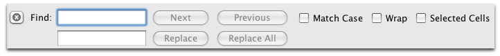

Toggles the Image Window on and off.
Save
Displays the data in Form Editing mode.
Grid Editing enables the Data Set to be displayed and edited much like a spreadsheet. Although very similar to most spreadsheet applicaitons (i.e. MS-Excel®) it is not considered a replacement for users who take advantage of many of their advanced features. Yet the grid editing feature wihtin the WorkBench provides many tools more specific to handling collections management data. For example, it can be usd to Georeference locality names and output KML files for Google Earth to name a few.
It is important to note that WorkBench is not merely a substitute for MS-Excel®, but includes many enhanced features that are specific to Collection's data.
Values within a DataSet are easily manipulated using the icons in the Workspace Item Bar:
| Insert a Row | Adds one new row under the active row. If no rows are active a new is inserted after the last record. | |
| Clear Cells | Clears the cells that are selected | |
| Delete A Row(s) | Deletes the entire row | |
| Carry Forward | Opens the 'Carry Forward' configuration dialog. See Carry Forward. | |
| Mapping | Plots the locality on a map. The locality is shown using this icon (pushpin). Selecting the icon displays all the collection object information. | |
| Google Earth | Plots the locality using Google Earth. The locality is shown using this icon (pushpin). Selecting the icon displays all the collection object information. | |
| BioGeomancer | Calls BioGeomancer with the current locality string to geo-reference the entry. | |
| Export | Exports selected rows or all the rows to an Excel or CSV file. | |
| Display Image | Toggles the Image Window on and off. |
|
Save |
Save | Saves the DataSet |
| Grid Editing | Displays the data in Grid Editing mode . DataSets always open in this view. | |
| Form Editing | Displays the data in Form Editing mode. |
To edit text in a cell, click on the cell and then:
To complete editing in a cell:
* For Mac OS X Users : The grid editing contains a bug in that you MUST complete editing a cell by before clicking on a different cell. The currently edited cell does not lose focus until the <esc> or F2 keys have been pressed.
Carry Forward enables the value in one or more columns (or fields) to be 'carried forward' or copied to the next new row of data. Clicking on the  button displays a configuration window that enables the desired columns of information to be selected.
button displays a configuration window that enables the desired columns of information to be selected.

Configure Carry Forward
The values in the selected column(s) are 'carried forward' into a new row when clicking on the insert row  button.
button.
NOTE: Selecting Carry Forward  is much like asking WorkBench to make a copy of the selected data and pasting it into the new record.
is much like asking WorkBench to make a copy of the selected data and pasting it into the new record.
In addition to the buttons in the Workspace the context menu provides additional actions, simply select one or more cells and then right click to display the context menu. (On a single button mouse this may be a <ctrl> click):
| Clear Cell | Clears the cells that are selected. |
| Delete Row | Deletes the rows (Note: one one cell per needs to be selected for the row to be included in the delete action). |
| Fill Up | Fills the selected cells with the value from the bottom selected cell. Use this tool to copy a value into one or more cells from the bottom cell upward. |
| Fill Down | Fills the selected rows with a value from the top selected cell downward. Use this tool to copy the correct value into one or more cells below. Simply sweep the correct cell along with the cells to be filled, right click on the correct cell and choose ‘Fill Up’ in the pop up window. The correct value will be pasted into the selected cells. |
Grid editing provides Find and a Find/Replace functionality. To display the "Find" panel you can:

Find Panel
The Panel areas are described below:
| Top Text Box | The search string |
| Bottom Text Box | The replacement string |
| Next | Finds the next matching value |
| Previous | Finds the previous matching value |
| Replace | Replaces the top box value with the bottom box value |
| Replace All | Replaces all matching values within the Data Set |
| Match Case | Match upper and lower case values exactly |
| Wrap | Searches the entire Data Set starting with the active record and wrapping from the bottom to the top of the Data Set and continuing. |
To search for a value:
To replace a value:
Note: The Find Panel is ONLY availble when Grid Editing, it is not available when Form Editing.
Quick Tips for Entering Data
Quick Tip for Deleting a Row(s):
OR click on the  at the bottom of the widow
at the bottom of the widow
Quick Tips for Clearing a Cell:
OR
Click on the button at the bottom of the window
Quick Tips for Adding Rows:
Quick Tips for Copying the Same Value into Multiple Cells:
Quick Tips for Adding a Row with Preset Values: